Садовый центр
Режим работы: Пн-Вс: с 9:00 до 20:00
Позвоните нам:
+7 (495) 926-09-90
 Search
Search
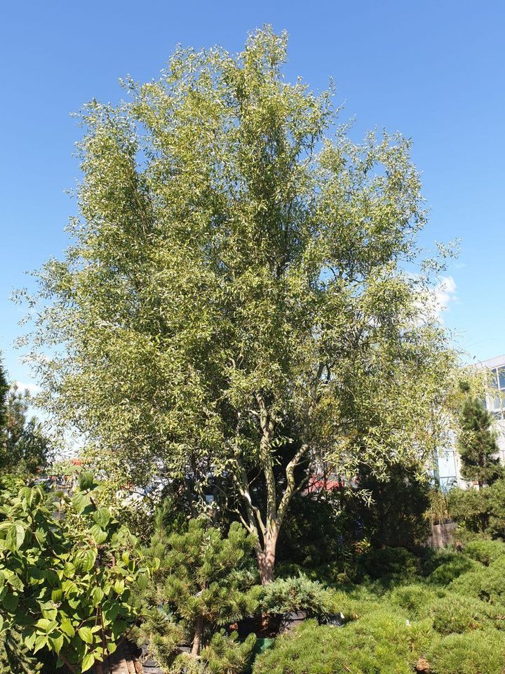
Необыкновенную красоту дерева придаёт ему его крона. Ветви тонкие и обладают зеленовато-золотистой или красной окраской.
⠀ Ива любит хорошо освещенные участки и большое количество влаги. Дерево также устойчива к холодам.
⠀ Место для посадки нужно выбрать максимально защищённое от воздействия холодных ветров. Ива хорошо растёт как в южных районах страны, так и в северных, включая Подмосковье.
При обморожении дерево достаточно быстро восстанавливается.
⠀ Посадку рекомендуется совершать вблизи водоемов, если есть такая возможность. В этом случае корни дерева могут самостоятельно добывать необходимое количество влаги и пропадает необходимость полива. Если же рядом отсутствует источник воды, то иву необходимо будет часто поливать.
Ива "Вавилон"
42 000,00 p.
Подробная информация
Данное растение часто называют самым красивым декоративным деревом, которое пользуется огромной популярностью среди наших садоводов и ландшафтных дизайнеров.Необыкновенную красоту дерева придаёт ему его крона. Ветви тонкие и обладают зеленовато-золотистой или красной окраской.
⠀ Ива любит хорошо освещенные участки и большое количество влаги. Дерево также устойчива к холодам.
⠀ Место для посадки нужно выбрать максимально защищённое от воздействия холодных ветров. Ива хорошо растёт как в южных районах страны, так и в северных, включая Подмосковье.
При обморожении дерево достаточно быстро восстанавливается.
⠀ Посадку рекомендуется совершать вблизи водоемов, если есть такая возможность. В этом случае корни дерева могут самостоятельно добывать необходимое количество влаги и пропадает необходимость полива. Если же рядом отсутствует источник воды, то иву необходимо будет часто поливать.
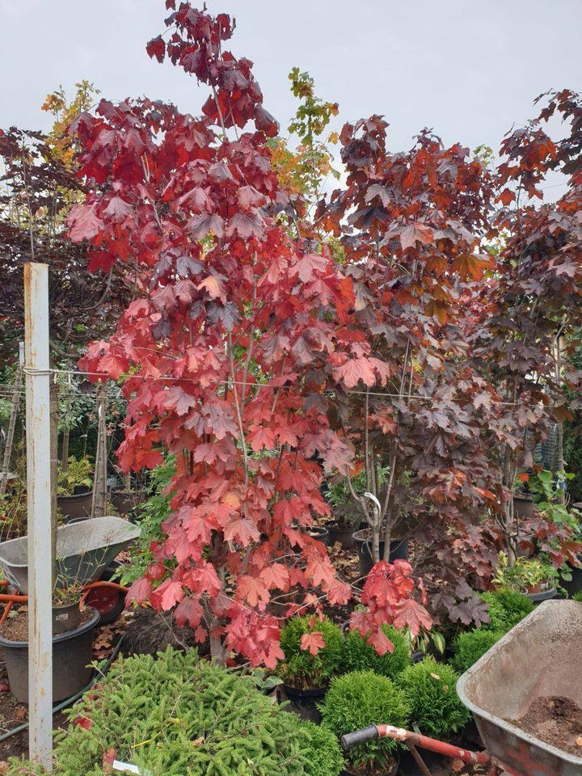
⠀ 👆Пишите сообщения или звоните по телефону в шапке профиля @green_season.ru Мы всегда готовы помочь и ответим на любые Ваши вопросы! ⠀ 📲 +7 (495) 926-09-90
Клён Кримсон кинг кустовой С120, высота 2,50 м
20 000 p.
Подробная информация
💖 Понравилось растение? Тогда узнавайте подробности приобретения, доставки, посадки и ухода!⠀ 👆Пишите сообщения или звоните по телефону в шапке профиля @green_season.ru Мы всегда готовы помочь и ответим на любые Ваши вопросы! ⠀ 📲 +7 (495) 926-09-90
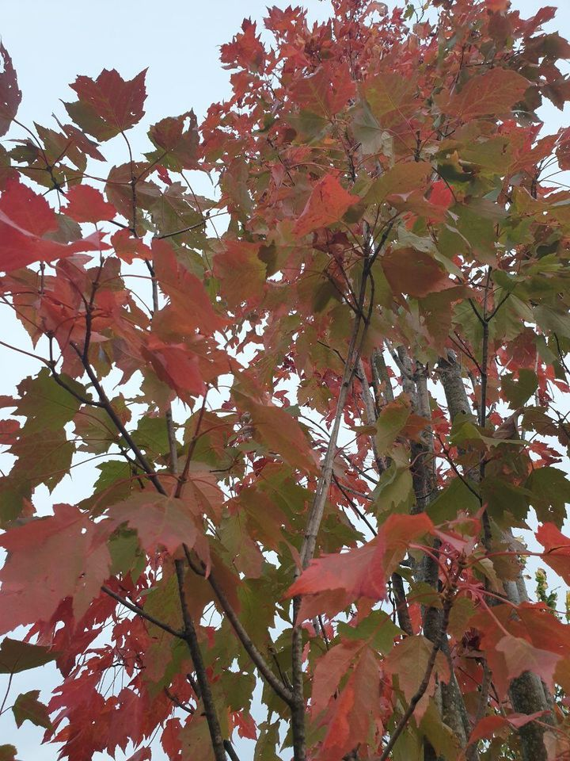
⠀ ☘ Растение весьма выносливо, но оно не любит прямых солнечных лучей, сквозняков и морозов ниже -15 градусов. Защищенный от ветра участок с мозаичным освещением будет идеальным местом для посадки клёна.
⠀ 👨🌾 При посадке нужно выдерживать расстояние между саженцами от полутора метров минимум. Яму готовят глубиной 50-70 см.
⠀ 💦 Частота полива зависит от района выращивания и погоды. При недостатке полива красный клён выживает, но теряет свою декоративность.
⠀ ☝️Это дерево с красными листьями красиво смотрится как в одиночных, так и в ограниченных групповых посадках.
Клён Рубрум в контейнере С160, высотой 3,5-4,0 м
60 000,00 p.
Подробная информация
🍁 Клён Рубрум, также известный как красный клён, декоративен не только благодаря листве, меняющей насыщенность окраски от весны к осени, но и серебристо-серой коре.⠀ ☘ Растение весьма выносливо, но оно не любит прямых солнечных лучей, сквозняков и морозов ниже -15 градусов. Защищенный от ветра участок с мозаичным освещением будет идеальным местом для посадки клёна.
⠀ 👨🌾 При посадке нужно выдерживать расстояние между саженцами от полутора метров минимум. Яму готовят глубиной 50-70 см.
⠀ 💦 Частота полива зависит от района выращивания и погоды. При недостатке полива красный клён выживает, но теряет свою декоративность.
⠀ ☝️Это дерево с красными листьями красиво смотрится как в одиночных, так и в ограниченных групповых посадках.
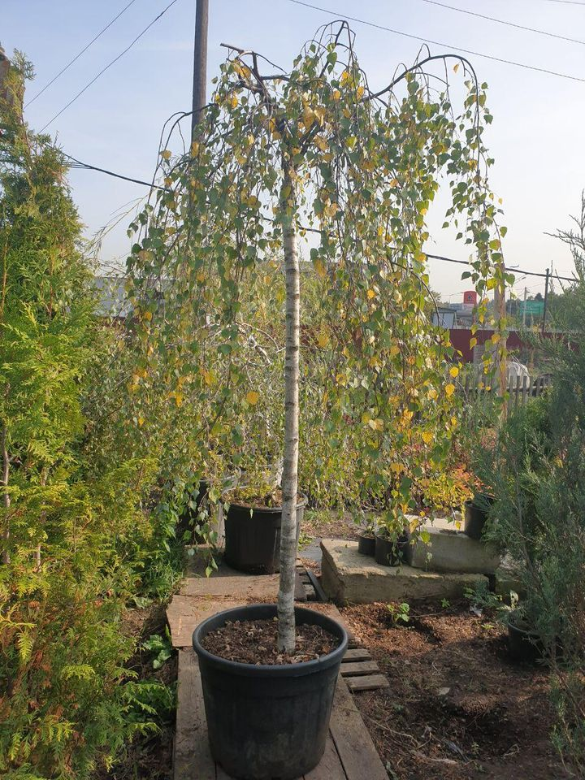
⠀ ☘️ Посадку саженцев берёзы с открытой корневой системой производят, когда они находятся в состоянии покоя: в ноябре или в начале марта. ⠀
👨🌾 Берёза хорошо переносит обрезку. Нежелательные для формирования кроны побеги можно обрезать раз в год. Лучше это делать осенью, когда все листья уже опали.
⠀ 💦 Молодые саженцы нуждаются в регулярном поливе, нельзя допускать высыхания грунта. Взрослым экземплярам также нужен регулярный полив, так как длительную засуху растение переносит плохо.
Берёза Пендула 2 м
8 000,00 p.
Подробная информация
🌳 Берёза Пендула — самый популярный и распространенный вид декоративной берёзы. Это высокое дерево, выстой до 30 м с длинными и тонкими ветвями.⠀ ☘️ Посадку саженцев берёзы с открытой корневой системой производят, когда они находятся в состоянии покоя: в ноябре или в начале марта. ⠀
👨🌾 Берёза хорошо переносит обрезку. Нежелательные для формирования кроны побеги можно обрезать раз в год. Лучше это делать осенью, когда все листья уже опали.
⠀ 💦 Молодые саженцы нуждаются в регулярном поливе, нельзя допускать высыхания грунта. Взрослым экземплярам также нужен регулярный полив, так как длительную засуху растение переносит плохо.
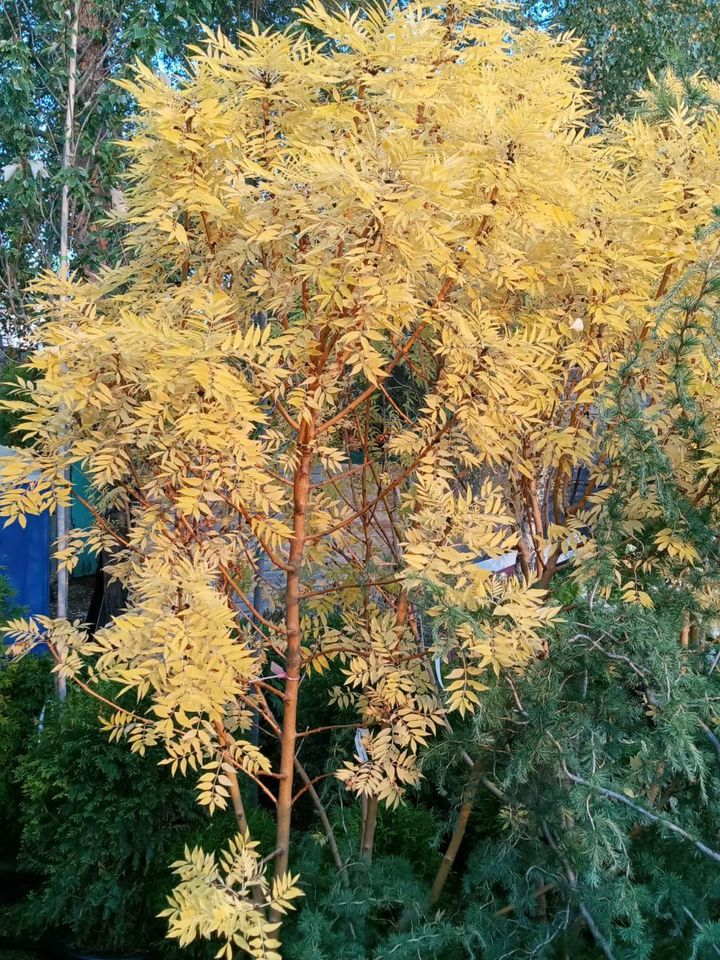
⠀ ☘ Дерево растёт медленно. Несмотря на морозостойкость ясеня, он предпочитает солнечные места.
⠀ 👨🌾 Растение требователено к почвам, хорошо растёт на свежих, плодородных, содержащих известь землях.
⠀ 💦 Поливать ясень требуется в засушливые периоды и после посадки (4-5 дней подряд). Он прекрасно переносит непродолжительную засуху.
⠀ ☝️Чаще всего ясень используется для аллейных посадок и создания колористических композиций, но также хорош и в одиночной посадке.
Ясень Желтокорый 2,1- 2,3 м
18 000 p.
Подробная информация
🍂 Ясень желтокорый достигает высоты в 4-5 м. Особенностью данного сорта является его листья светло-жёлтого цвета. К осени окраска становится ярко-жёлтой.⠀ ☘ Дерево растёт медленно. Несмотря на морозостойкость ясеня, он предпочитает солнечные места.
⠀ 👨🌾 Растение требователено к почвам, хорошо растёт на свежих, плодородных, содержащих известь землях.
⠀ 💦 Поливать ясень требуется в засушливые периоды и после посадки (4-5 дней подряд). Он прекрасно переносит непродолжительную засуху.
⠀ ☝️Чаще всего ясень используется для аллейных посадок и создания колористических композиций, но также хорош и в одиночной посадке.
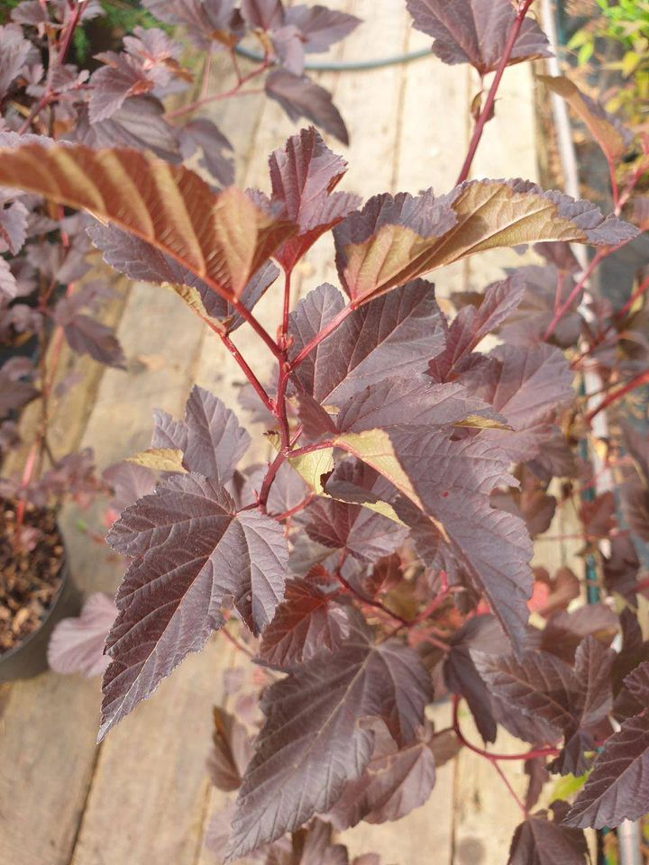
⠀ 💐 Пузыреплодник diable является одним из самых популярных среди ландшафтных дизайнеров и владельцев частных домов видом «живой изгороди».
⠀ 👩🏻🌾 Особенностью сорта являются пурпурные, равномерно окрашенные листья. Осенью их окраска практически не меняется, только становится чуть светлее.
⠀ ☘️ Растение устойчиво к различным вредителям и болезням, соответственно никакой особенной обработки не требует.
⠀ 🌳 Растение отлично переносит стрижку и обрезку. Обрезают только сухие веточки, старые ветки срезать не надо!
⠀ 💦 Предпочитает плодородные, увлажненные, дренированные почвы. Засуху переносит хорошо, но лучше не забывать его регулярно поливать.
💳 Принимаем оплату наличными, банковской картой через терминал и переводом на карту.
Пузыреплодник калинолистный Diable
0,7-0,8 м в контейнере С5
0,7-0,8 м в контейнере С5
750,00 p.
Подробная информация
💐 ПУЗЫРЕПЛОДНИК КАЛИНОЛИСТНЫЙ DIABLE 💐⠀ 💐 Пузыреплодник diable является одним из самых популярных среди ландшафтных дизайнеров и владельцев частных домов видом «живой изгороди».
⠀ 👩🏻🌾 Особенностью сорта являются пурпурные, равномерно окрашенные листья. Осенью их окраска практически не меняется, только становится чуть светлее.
⠀ ☘️ Растение устойчиво к различным вредителям и болезням, соответственно никакой особенной обработки не требует.
⠀ 🌳 Растение отлично переносит стрижку и обрезку. Обрезают только сухие веточки, старые ветки срезать не надо!
⠀ 💦 Предпочитает плодородные, увлажненные, дренированные почвы. Засуху переносит хорошо, но лучше не забывать его регулярно поливать.
💳 Принимаем оплату наличными, банковской картой через терминал и переводом на карту.
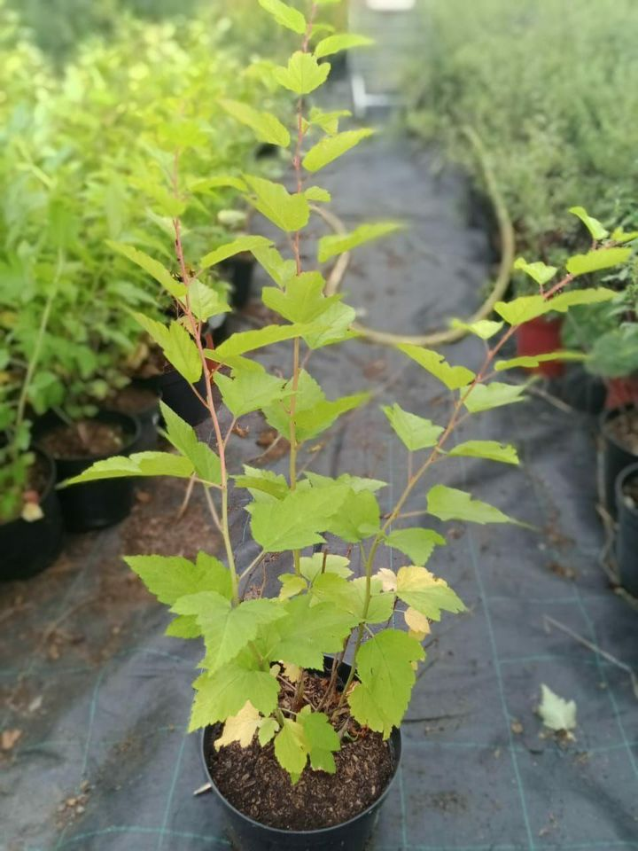
⠀ Цветет в течение двух-трех недель в первой половине лета, а посадку лучше всего совершать весной или осенью.
⠀ Растение любит яркий солнечный свет или полутень. Почва должна быть рыхлой, плодородной, хорошо дренированной и не содержащей известь и суглинок.
⠀ Пузыреплодник нуждается в обрезке. Ее необходимо делать весной, до набухания почек.
⠀ Поливать нужно строго под корень, рано утром или после заката. Когда жарко, полив нужно участить до двух раз в неделю.
Пузыреплодник 60-80 см
350,00 p.
Подробная информация
Пузыреплодник является одним из самых популярных среди ландшафтных дизайнеров и домовладельцев видом «живой изгороди».⠀ Цветет в течение двух-трех недель в первой половине лета, а посадку лучше всего совершать весной или осенью.
⠀ Растение любит яркий солнечный свет или полутень. Почва должна быть рыхлой, плодородной, хорошо дренированной и не содержащей известь и суглинок.
⠀ Пузыреплодник нуждается в обрезке. Ее необходимо делать весной, до набухания почек.
⠀ Поливать нужно строго под корень, рано утром или после заката. Когда жарко, полив нужно участить до двух раз в неделю.
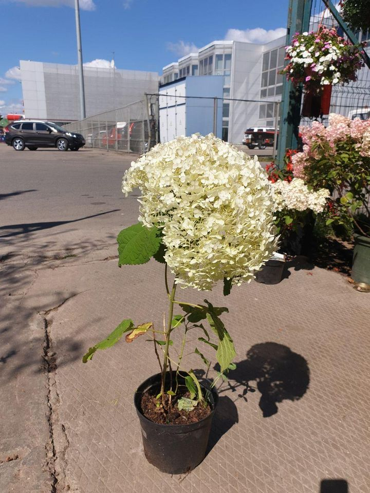
⠀ � Данное растение представляет собой декоративный листопадный кустарник, обладающий куполовидной, рыхлой и раскидистой формой.
⠀ � Гортензия растёт быстро: до 80 сантиметров в год. Кустарник достигает высоты в 1-1,5 метра, и диаметра до 3 метров. Анабель -- долгожительница: может расти около 50-и лет.
⠀ � Морозостойкость растения достигает -35°C. Гортензия теплолюбивая, требовательна к влаге, но может переносить короткую засуху. Хорошо растёт в полузатемнённых местах.
⠀ � Перед посадкой необходимо подготовить лунку размером 50×50×60 см. На дно ямы рекомендуется поместить дренаж в виде гравия и битого кирпича слоем 5-10 см, а поверх дренажа насыпать плодородную почву слоем 10-15 см.
⠀ � В сухой и ветреный период рекомендуется опрыскивать растение сразу же после посадки. Расход воды на полив составляют 15-20 литров на одно растение.
Гортензия древовидная "Анабель" 0,8-1,0 м
700,00 p.
Подробная информация
� Гортензия сорта "Анабель" (на фото) - один из самых красивых и популярных сортов древовидной крупнолистной гортензии, несложный в уходе. Цветёт гортензия с июня до конца осени огромными белыми шарами соцветий до 30 см в диаметре, зеленеющими при отцветании!⠀ � Данное растение представляет собой декоративный листопадный кустарник, обладающий куполовидной, рыхлой и раскидистой формой.
⠀ � Гортензия растёт быстро: до 80 сантиметров в год. Кустарник достигает высоты в 1-1,5 метра, и диаметра до 3 метров. Анабель -- долгожительница: может расти около 50-и лет.
⠀ � Морозостойкость растения достигает -35°C. Гортензия теплолюбивая, требовательна к влаге, но может переносить короткую засуху. Хорошо растёт в полузатемнённых местах.
⠀ � Перед посадкой необходимо подготовить лунку размером 50×50×60 см. На дно ямы рекомендуется поместить дренаж в виде гравия и битого кирпича слоем 5-10 см, а поверх дренажа насыпать плодородную почву слоем 10-15 см.
⠀ � В сухой и ветреный период рекомендуется опрыскивать растение сразу же после посадки. Расход воды на полив составляют 15-20 литров на одно растение.
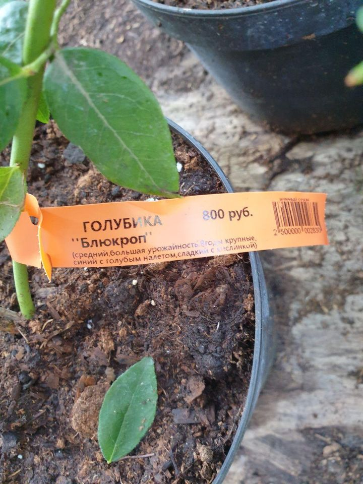
⠀ 💳 Принимаем оплату наличными, банковской картой через терминал и переводом на карту.
⠀ 🍇 Голубика садовая может достигать высоты в 1-1,5 метра. Растёт она на кислых почвах в сырых местах, а плодоносит в течение 70-80 лет, начиная с 3-летнего возраста.
⠀ ✔ СОРТ БЛЮКРОП Специально был выведен под наши климатические условия, поэтому сорт отличается своей морозостойкостью. Плоды созревают в июле-августе, плодоношение очень обильное, регулярное, урожайность 6-9 кг с куста. ⠀
Голубика Блю Кроп С3 (3 литра), высота 50-60 см
800 p.
Подробная информация
❗️Скидка 15% на все растения для подписчиков садового центра @green_season.ru и питомника @green_season_shahovskaya "Зелёный Сезон" в Facebook и Instagram‼️⠀ 💳 Принимаем оплату наличными, банковской картой через терминал и переводом на карту.
⠀ 🍇 Голубика садовая может достигать высоты в 1-1,5 метра. Растёт она на кислых почвах в сырых местах, а плодоносит в течение 70-80 лет, начиная с 3-летнего возраста.
⠀ ✔ СОРТ БЛЮКРОП Специально был выведен под наши климатические условия, поэтому сорт отличается своей морозостойкостью. Плоды созревают в июле-августе, плодоношение очень обильное, регулярное, урожайность 6-9 кг с куста. ⠀
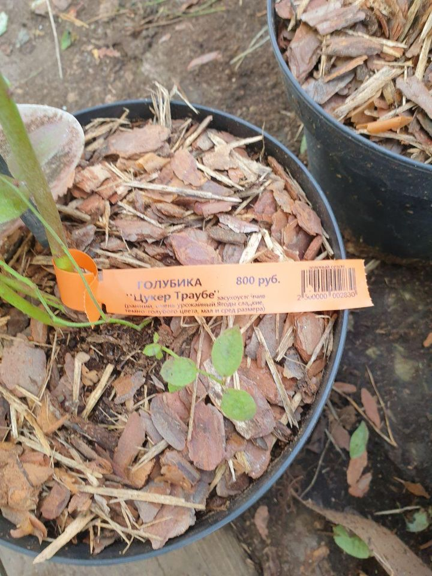
⠀ 💳 Принимаем оплату наличными, банковской картой через терминал и переводом на карту.
⠀ 🍇 Голубика садовая может достигать высоты в 1-1,5 метра. Растёт она на кислых почвах в сырых местах, а плодоносит в течение 70-80 лет, начиная с 3-летнего возраста.
⠀ ✔ СОРТ ЦУКЕР ТРАУБЕ Очень урожайный сорт. Куст достигает высоты в 0,6—0,8 м. Созревание ягод начинается в первой декаде июля. Плоды темно-голубого цвета, сладкие, маленького и среднего размера. Плодоносит на протяжении 6 недель. Сорт засухоустойчив и хорош для выращивания на сухих почвах в бедных атмосферными осадками районах.
Голубика Цукер Траубе С3 (3 литра), высота 50-60 см
800 p.
Подробная информация
⠀ ❗️Скидка 15% на все растения для подписчиков садового центра @green_season.ru и питомника @green_season_shahovskaya "Зелёный Сезон" в Facebook и Instagram‼️⠀ 💳 Принимаем оплату наличными, банковской картой через терминал и переводом на карту.
⠀ 🍇 Голубика садовая может достигать высоты в 1-1,5 метра. Растёт она на кислых почвах в сырых местах, а плодоносит в течение 70-80 лет, начиная с 3-летнего возраста.
⠀ ✔ СОРТ ЦУКЕР ТРАУБЕ Очень урожайный сорт. Куст достигает высоты в 0,6—0,8 м. Созревание ягод начинается в первой декаде июля. Плоды темно-голубого цвета, сладкие, маленького и среднего размера. Плодоносит на протяжении 6 недель. Сорт засухоустойчив и хорош для выращивания на сухих почвах в бедных атмосферными осадками районах.
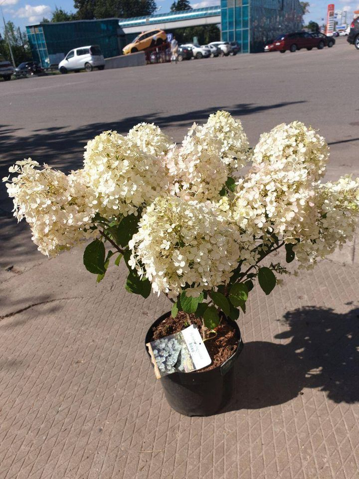
� одно из любимых растений садоводов, которое вы можете приобрести в нашем Садовом центре @green_season.ru
� Начиная с середины лета это растение распускает свои пышные соцветия розовых, голубых или белых оттенков. Обильное цветение продолжается с середины июля до конца октября.
� В отличие от других видов гортензий, данный вид хорошо переносит наш холодный климат. Но помните, что это растение не переносит застоя воды, и поливать его необходимо 2 раза в неделю из расчёта около 3 вёдер на куст.
� В северных регионах гортензию рекомендуется сажать в открытый грунт, предпочтительнее весной, а на юге процедуру осуществляют и осенью.
� Наши саженцы гортензий с закрытой корневой системой в ёмкостях различного размера можно высаживать в период с апреля по октябрь.
� Почву нужно хорошо утрамбовать. Полив гортензии после посадки обязателен, вода должна просачиваться на глубину расположения корней 30-40 см.
Гортензия Метельчатая (контейнер С5)
1 000 p.
Подробная информация
� ГОРТЕНЗИЯ МЕТЕЛЬЧАТАЯ � ⠀� одно из любимых растений садоводов, которое вы можете приобрести в нашем Садовом центре @green_season.ru
� Начиная с середины лета это растение распускает свои пышные соцветия розовых, голубых или белых оттенков. Обильное цветение продолжается с середины июля до конца октября.
� В отличие от других видов гортензий, данный вид хорошо переносит наш холодный климат. Но помните, что это растение не переносит застоя воды, и поливать его необходимо 2 раза в неделю из расчёта около 3 вёдер на куст.
� В северных регионах гортензию рекомендуется сажать в открытый грунт, предпочтительнее весной, а на юге процедуру осуществляют и осенью.
� Наши саженцы гортензий с закрытой корневой системой в ёмкостях различного размера можно высаживать в период с апреля по октябрь.
� Почву нужно хорошо утрамбовать. Полив гортензии после посадки обязателен, вода должна просачиваться на глубину расположения корней 30-40 см.
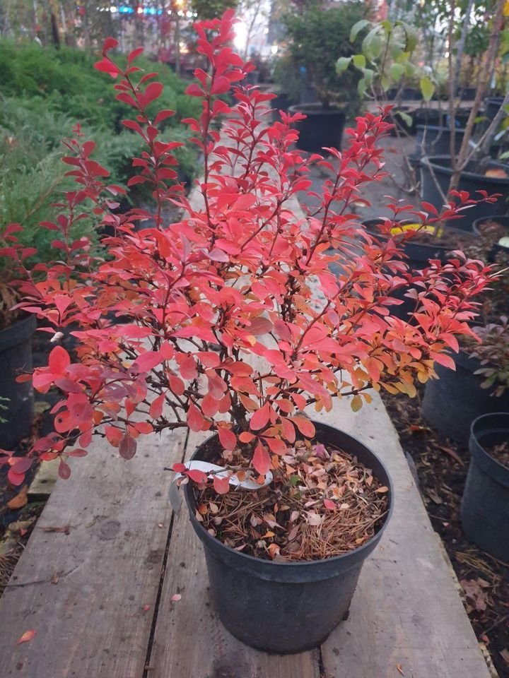
⠀ ☘ Кустарник достигает 1–1,5 м в высоту и 1,5–2 м в диаметре. Листья маленькие, пурпурно-красного цвета. Осенью они становятся светло-карминными, а побеги красно-пурпурными.
⠀ 👨🌾 Кустарник мало требователен к виду почвы. Предпочитает хорошо дренированные свежие или влажные супесчаные и суглинистые почвы, от слабокислых до слабощёлочных.
⠀ 💦 Бабарис не переносит переуплотнения почвы. Кустарник жаростойкий и умеренно засухоустойчивый.
⠀ ☝️Барбарисы — это один из популярнейших разновидностей живой изгороди. Они служат «живыми» бордюрами и ограждениями.
Барбарис Атропурпуреа в контейнере С3, высотой 40-50 см
680 p.
Подробная информация
🍂 Атропурпуреа является одним из наиболее декоративных видов барбариса. Молодое растение имеет округлую форму. С возрастом ветви растут почти горизонтально и начинают дугообразно изгибается.⠀ ☘ Кустарник достигает 1–1,5 м в высоту и 1,5–2 м в диаметре. Листья маленькие, пурпурно-красного цвета. Осенью они становятся светло-карминными, а побеги красно-пурпурными.
⠀ 👨🌾 Кустарник мало требователен к виду почвы. Предпочитает хорошо дренированные свежие или влажные супесчаные и суглинистые почвы, от слабокислых до слабощёлочных.
⠀ 💦 Бабарис не переносит переуплотнения почвы. Кустарник жаростойкий и умеренно засухоустойчивый.
⠀ ☝️Барбарисы — это один из популярнейших разновидностей живой изгороди. Они служат «живыми» бордюрами и ограждениями.
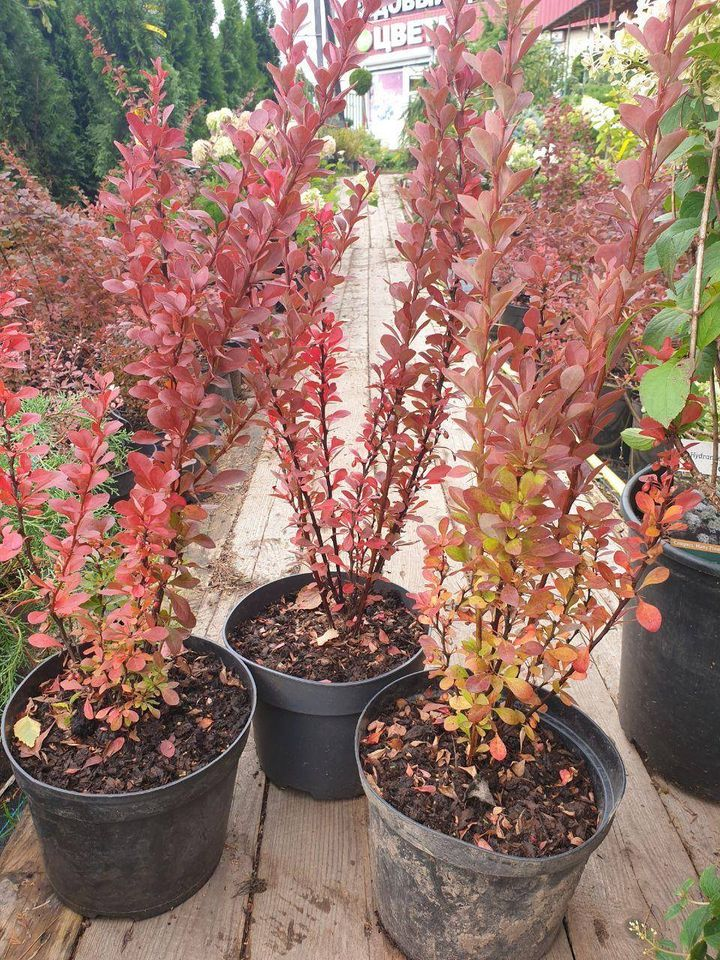
Барбарис Тунберга «Ред Рокет» «Красная ракета» (Berberis thunbergii «Red Rocket») - яркий представитель группы пурпуролистных видов. ⠀
Высокий колонновидный кустарник до 2 м высотой и до 1 м в диаметре. Ветви устремлены горизонтально вверх и покрыты обильными короткими ответвлениями. ⠀
Барбарис любит сухие и солнечные места. Помните, что барбарисы не переносят застоя воды. Барбарисы хорошо переносят городские условия. При посадке в кислую почву необходимо внести 300 граммов гашеной извести из расчёта на одно растение. ⠀
Весной ветви барбарисов покрываются желтыми цветками. Осенью же листья растения обретают оранжево-пурпурный окрас. ⠀
Как и упоминалось ранее, застой воды губителен для кустарника. Поливают растение очень редко: во время высадки и пока куст не приживется.
Барбарис Тунберга «Ред Рокет» «Красная ракета» (Berberis
thunbergii «Red Rocket»)
850 p.
Подробная информация
Это разновидность растений для живой изгороди, которые часто используются в качестве «живых» бордюров и ограждений.Барбарис Тунберга «Ред Рокет» «Красная ракета» (Berberis thunbergii «Red Rocket») - яркий представитель группы пурпуролистных видов. ⠀
Высокий колонновидный кустарник до 2 м высотой и до 1 м в диаметре. Ветви устремлены горизонтально вверх и покрыты обильными короткими ответвлениями. ⠀
Барбарис любит сухие и солнечные места. Помните, что барбарисы не переносят застоя воды. Барбарисы хорошо переносят городские условия. При посадке в кислую почву необходимо внести 300 граммов гашеной извести из расчёта на одно растение. ⠀
Весной ветви барбарисов покрываются желтыми цветками. Осенью же листья растения обретают оранжево-пурпурный окрас. ⠀
Как и упоминалось ранее, застой воды губителен для кустарника. Поливают растение очень редко: во время высадки и пока куст не приживется.
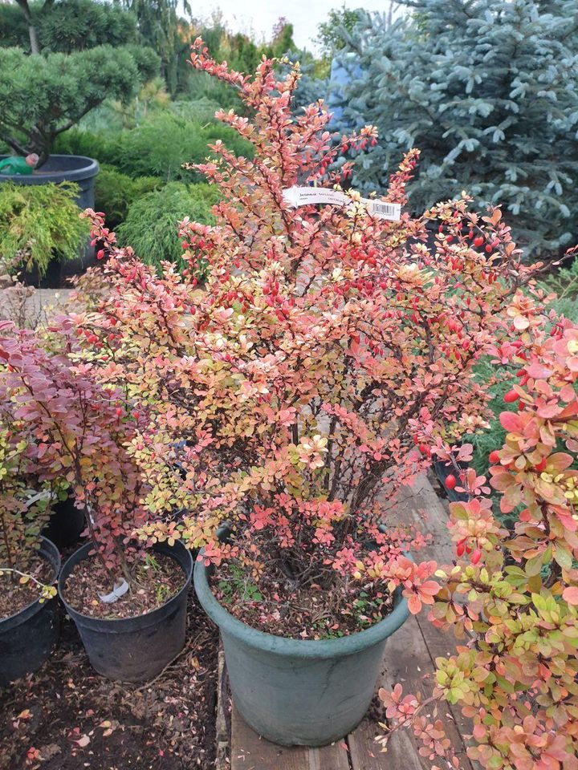
👆Пишите сообщения или звоните по телефону в шапке профиля @green_season.ru Мы всегда готовы помочь и ответим на любые Ваши вопросы! ⠀
📲 +7 (495) 926-09-90
Барбарис С10 80 см
3 000 p.
Подробная информация
💖 Понравилось растение? Тогда узнавайте подробности приобретения, доставки, посадки и ухода! ⠀👆Пишите сообщения или звоните по телефону в шапке профиля @green_season.ru Мы всегда готовы помочь и ответим на любые Ваши вопросы! ⠀
📲 +7 (495) 926-09-90
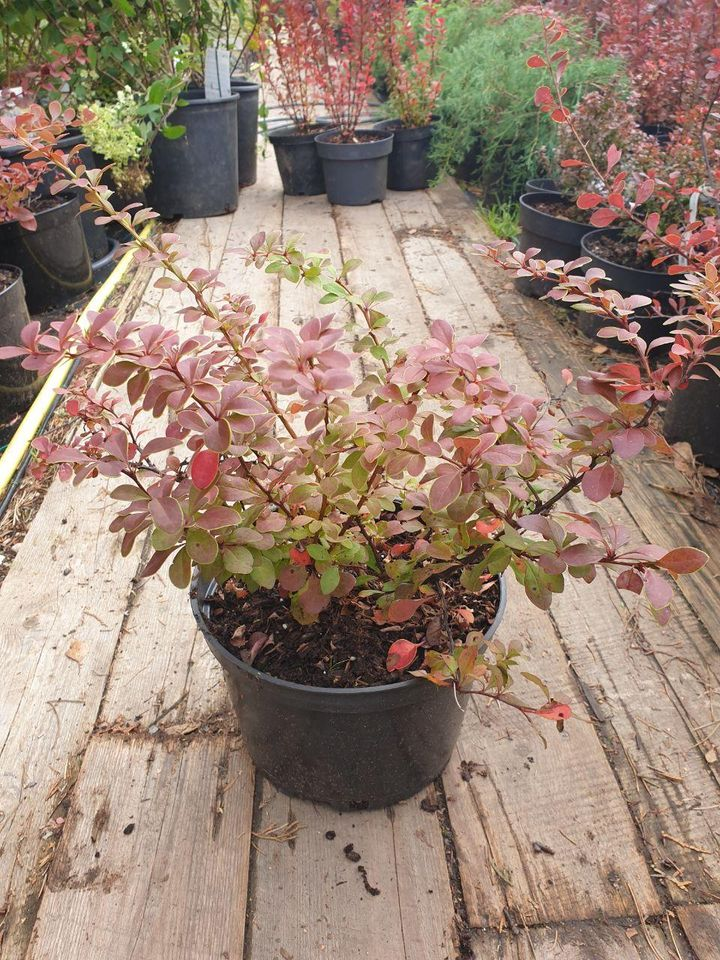
🌳Барбарис Тунберга "Коронита" (Berberis thunbergii 'Coronita') декоративен раскидистой кроной с дуговидными побегами и коричнево-красными листьями с узкой зеленовато-желтой каймой. Это раскидистый кустарник высотой около 1 м и диаметром до 1,5 м. ⠀⠀
☘️ Барбарис любит сухие и солнечные места. Помните, что барбарисы не переносят застоя воды.
👨🌾 Барбарисы хорошо переносят городские условия. При посадке в кислую почву необходимо внести 300 граммов гашеной извести из расчёта на одно растение. ⠀
🌳 Весной ветви барбарисов покрываются желтыми цветками. Осенью же листья растения обретают оранжево-пурпурный окрас. ⠀
💦 Как и упоминалось ранее, застой воды губителен для кустарника. Поливают растение очень редко: во время высадки и пока куст не приживется. ⠀
💵 В садовом центре «Зелёный Сезон» стоимость барбариса высотой 0,8-1,0 м в горшке С7,5 — 850 ₽, а высотой 1,0-1,2 м в горшке С10 — 1000 ₽. ⠀
💳 Принимаем оплату наличными, банковской картой через терминал и переводом на карту.
Барбарис Тунберга "Коронита" 1,0-1,2 м в горшке С10
1 000 p.
Подробная информация
Эта разновидность растений для живой изгороди, которые часто используются в качестве «живых» бордюров и ограждений.🌳Барбарис Тунберга "Коронита" (Berberis thunbergii 'Coronita') декоративен раскидистой кроной с дуговидными побегами и коричнево-красными листьями с узкой зеленовато-желтой каймой. Это раскидистый кустарник высотой около 1 м и диаметром до 1,5 м. ⠀⠀
☘️ Барбарис любит сухие и солнечные места. Помните, что барбарисы не переносят застоя воды.
👨🌾 Барбарисы хорошо переносят городские условия. При посадке в кислую почву необходимо внести 300 граммов гашеной извести из расчёта на одно растение. ⠀
🌳 Весной ветви барбарисов покрываются желтыми цветками. Осенью же листья растения обретают оранжево-пурпурный окрас. ⠀
💦 Как и упоминалось ранее, застой воды губителен для кустарника. Поливают растение очень редко: во время высадки и пока куст не приживется. ⠀
💵 В садовом центре «Зелёный Сезон» стоимость барбариса высотой 0,8-1,0 м в горшке С7,5 — 850 ₽, а высотой 1,0-1,2 м в горшке С10 — 1000 ₽. ⠀
💳 Принимаем оплату наличными, банковской картой через терминал и переводом на карту.

Барбарис Тунберга "Коронита" 0,8-1,0 м С7,5
850 p.
Подробная информация
Эта разновидность растений для живой изгороди, которые часто используются в качестве «живых» бордюров и ограждений.🌳Барбарис Тунберга "Коронита" (Berberis thunbergii 'Coronita') декоративен раскидистой кроной с дуговидными побегами и коричнево-красными листьями с узкой зеленовато-желтой каймой. Это раскидистый кустарник высотой около 1 м и диаметром до 1,5 м. ⠀⠀
☘️ Барбарис любит сухие и солнечные места. Помните, что барбарисы не переносят застоя воды.
👨🌾 Барбарисы хорошо переносят городские условия. При посадке в кислую почву необходимо внести 300 граммов гашеной извести из расчёта на одно растение. ⠀
🌳 Весной ветви барбарисов покрываются желтыми цветками. Осенью же листья растения обретают оранжево-пурпурный окрас. ⠀
💦 Как и упоминалось ранее, застой воды губителен для кустарника. Поливают растение очень редко: во время высадки и пока куст не приживется. ⠀
💵 В садовом центре «Зелёный Сезон» стоимость барбариса высотой 0,8-1,0 м в горшке С7,5 — 850 ₽, а высотой 1,0-1,2 м в горшке С10 — 1000 ₽. ⠀
💳 Принимаем оплату наличными, банковской картой через терминал и переводом на карту.

Пузыреплодник калинолистный Diable 0,7-0,8 м в контейнере С5
750 p.
Подробная информация
💐 ПУЗЫРЕПЛОДНИК КАЛИНОЛИСТНЫЙ DIABLE 💐 ⠀💐 Пузыреплодник diable является одним из самых популярных среди ландшафтных дизайнеров и владельцев частных домов видом «живой изгороди». ⠀
👩🏻🌾 Особенностью сорта являются пурпурные, равномерно окрашенные листья. Осенью их окраска практически не меняется, только становится чуть светлее. ⠀
☘️ Растение устойчиво к различным вредителям и болезням, соответственно никакой особенной обработки не требует. ⠀
🌳 Растение отлично переносит стрижку и обрезку. Обрезают только сухие веточки, старые ветки срезать не надо! ⠀
💦 Предпочитает плодородные, увлажненные, дренированные почвы. Засуху переносит хорошо, но лучше не забывать его регулярно поливать.
💳 Принимаем оплату наличными, банковской картой через терминал и переводом на карту.